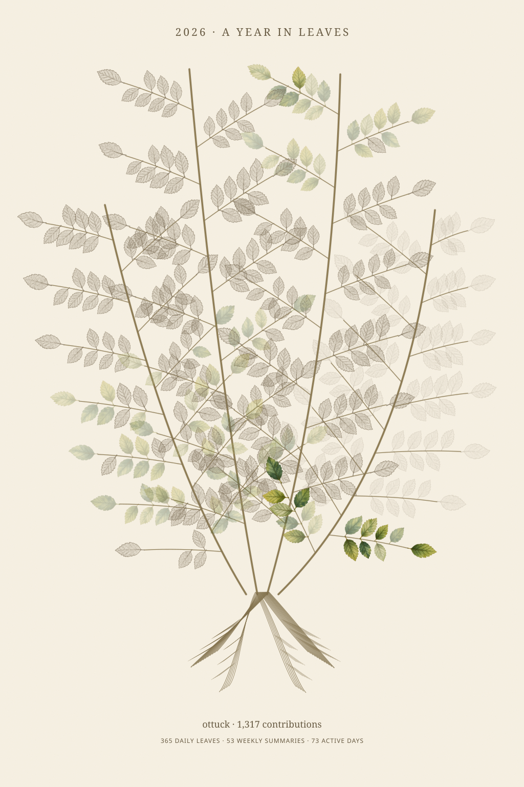

A little breeze.
같은 GitHub 기록, 같은 잎과 색. 오른쪽 그림에는 작은 바람만 더했습니다.
몇 초 동안 바라보면 가지와 잎이 함께 천천히 흔들립니다.

SVG 크게 보기 ↗
움직이는 SVG 크게 보기 ↗같은 GitHub 기록, 같은 잎과 색. 오른쪽 그림에는 작은 바람만 더했습니다.
몇 초 동안 바라보면 가지와 잎이 함께 천천히 흔들립니다.

SVG 크게 보기 ↗
움직이는 SVG 크게 보기 ↗